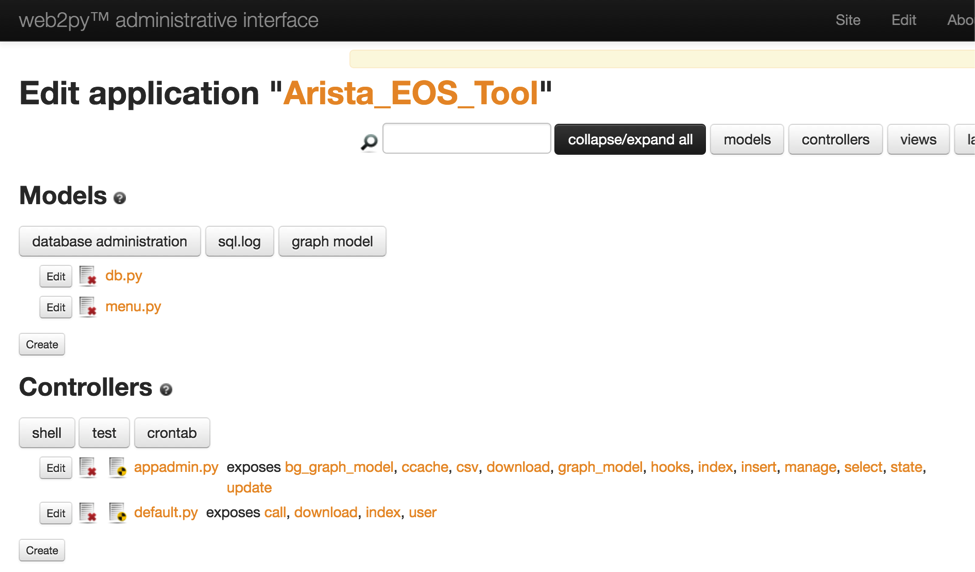

Chapter 7: Creating a New Web2Py Application¶
We are going to create a new application and launch all our use cases through that application. You can create many applications and host it from single web2py instance. For example, you can build separate applications for your network operations, engineering and architecture groups. The application which we are going to create is more suitable for network operations team.
Default Admin Page¶
When you install Web2Py, it installs few applications by default. One of them is an admin application which provides the administrative interface to create, modify, develop and delete applications. You can access the admin application from your browser by using the url https://<web-server>/admin/default/index. It will prompt you for the admin password. Use the password you set when you brought the web2py service up.
You will see the default applications created as part of the web2py installation.
Create a New Application¶
You can create new applications from the admin interface. Simply provide a name for your new application under “New simple application” section and click create. In our example, we use the application name as “Arista_EOS_Tool”.

It will create the new application with default models, controllers and views.
You can view the newly created application by directly launching from your browser using the url https://<web-server>/Arista_EOS_Tool/default/index. You can also launch your application from admin interface. Right click your application and click “open Link in New Tab”.
This is the default web site created by web2py for your application.
You can verify the folders and files created by web2py for your new application in the Ubuntu server. You can see the default applications and your application in the “”/home/www-data/web2py/applications” folder.
anees@ubuntu-web2py:/home/www-data/web2py/applications$ pwd
/home/www-data/web2py/applications
anees@ubuntu-web2py:/home/www-data/web2py/applications$ ll
drwxr-xr-x 8 www-data www-data 4096 Mar 14 16:17 ./
drwxr-xr-x 11 www-data www-data 4096 Mar 14 16:17 ../
drwxrwxr-x 14 www-data www-data 4096 Dec 29 12:18 admin/
drwxrwxr-x 15 www-data www-data 4096 Dec 29 12:20 Arista_EOS_Tool/
drwxrwxr-x 14 www-data www-data 4096 Jan 29 21:21 examples/
-rw-rw-r-- 1 www-data www-data 1 Dec 26 04:58 __init__.py
-rw-r--r-- 1 www-data www-data 111 Dec 29 12:18 __init__.pyc
drwxrwxr-x 14 www-data www-data 4096 Dec 29 12:18 welcome/
Within each application, you can see the folders for model, controllers and views.
anees@ubuntu-web2py:/home/www-data/web2py/applications$ cd Arista_EOS_Tool/
anees@ubuntu-web2py:/home/www-data/web2py/applications/Arista_EOS_Tool$ ll
drwxrwxr-x 15 www-data www-data 4096 Dec 29 12:20 ./
drwxr-xr-x 8 www-data www-data 4096 Mar 14 16:17 ../
-rw-rw-r-- 1 www-data www-data 55 Dec 26 04:58 ABOUT
drwxr-xr-x 2 www-data www-data 4096 Dec 29 12:19 cache/
drwxrwxr-x 2 www-data www-data 4096 Dec 29 12:21 controllers/
drwxrwxr-x 2 www-data www-data 4096 Dec 26 04:58 cron/
drwxr-xr-x 2 www-data www-data 4096 May 19 09:22 databases/
drwxr-xr-x 2 www-data www-data 16384 May 19 09:40 errors/
-rw-rw-r-- 1 www-data www-data 1 Dec 26 04:58 __init__.py
-rw-r--r-- 1 www-data www-data 127 Dec 29 12:20 __init__.pyc
drwxrwxr-x 2 www-data www-data 4096 Dec 26 04:58 languages/
-rw-rw-r-- 1 www-data www-data 208 Dec 26 04:58 LICENSE
drwxrwxr-x 2 www-data www-data 4096 Jan 29 17:42 models/
drwxrwxr-x 2 www-data www-data 4096 Dec 29 12:20 modules/
drwxrwxr-x 2 www-data www-data 4096 Dec 26 04:58 private/
-rw-r--r-- 1 www-data www-data 45009 Jun 9 10:08 progress.log
-rw-rw-r-- 1 www-data www-data 1510 Dec 26 04:58 routes.example.py
drwxr-xr-x 20 www-data www-data 4096 Jun 6 08:17 sessions/
drwxrwxr-x 6 www-data www-data 4096 Jun 9 10:07 static/
drwxr-xr-x 2 www-data www-data 4096 Dec 29 12:19 uploads/
drwxrwxr-x 3 www-data www-data 4096 Jan 29 19:44 views/
You can find the default controller default.py under the controllers folder.
anees@ubuntu-web2py:/home/www-data/web2py/applications/Arista_EOS_Tool$ cd controllers/
anees@ubuntu-web2py:/home/www-data/web2py/applications/Arista_EOS_Tool/controllers$ ll
drwxrwxr-x 2 www-data www-data 4096 Dec 29 12:21 ./
drwxrwxr-x 15 www-data www-data 4096 Dec 29 12:20 ../
-rw-rw-r-- 1 www-data www-data 25689 Dec 26 04:58 appadmin.py
-rw-rw-r-- 1 www-data www-data 33650 May 19 09:45 default.py
You can find the views under the “views/default” folder.
anees@ubuntu-web2py:/home/www-data/web2py/applications/Arista_EOS_Tool/controllers$ cd ../views/default
anees@ubuntu-web2py:/home/www-data/web2py/applications/Arista_EOS_Tool/views/default$ ll
-rw-rw-r-- 1 www-data www-data 1660 Jun 9 10:08 index.html
Edit the Application¶
We will remove the default scripts from the default controller and the view to start a clean empty application. Then from next chapter onwards, we will start populating our network use cases in this application.
Go to admin interface using the url https://<web-server>/admin/default/index. Click the “Manage” button and select Edit.

Click Edit which is right next to default.py controller.
You will see the default functions created by web2py. You should be able to see views (html files) for each of the function in this controller.
Remove all the scripts in the default.py and just enter the below Python script.
def index():
return dict()
We have just created a function index() which does not have any logic and it just returns empty dictionary to the view. Save the script.
Now we will cleanup the view (Arista_EOS_Tool/views/default/index.html) for the index() function. Open the default view for index() function from administrative interface. On the left top, you will see files toggle –> Views –> default/index.html.
Delete the existing html scripts and just include the web2py’s default layout. layout.html is hosted for every application you create through web2py. You can find this file inside the views folder of your application (Arista_EOS_Tool/views/).
Save the view and verify your blank application from browser http://<web-server>/Arista_EOS_Tool/default/index. The web page displays only the default layout (layout.html) which we included in the view.
We have successfully created a blank application. Let us move forward in hosting network operations use cases.